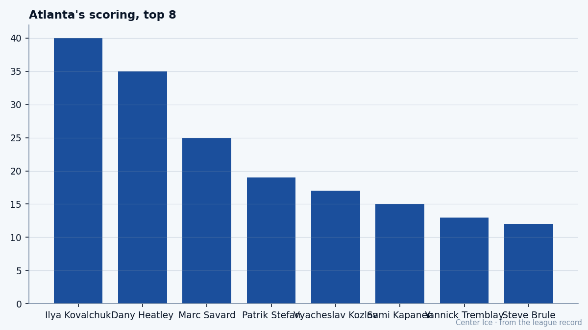

First Overall, Last Place: Ilya Kovalchuk plays for July
A 137-point pace on a 14-point team, with one year left at $1.10M
 Ilya Kovalchuk84 is 24 games into his second season and he is scoring at a pace that exceeds last year. Last season he put up 134 points in 82 games for
Ilya Kovalchuk84 is 24 games into his second season and he is scoring at a pace that exceeds last year. Last season he put up 134 points in 82 games for  Atlanta Thrashers. This season he has 40 in 24, a pace of 137 over 82. His goals have come down from 72 last year to 18 in 24, but his assists are up relative to his goal production, and the overall number is climbing.
Atlanta Thrashers. This season he has 40 in 24, a pace of 137 over 82. His goals have come down from 72 last year to 18 in 24, but his assists are up relative to his goal production, and the overall number is climbing.
His team is 5-16-2. They have 14 points in 24 games. They are last in the Southeast Division and last in the league. They score 3.63 goals a night and give up 4.58. Kovalchuk is the best player on the worst team in this league, and he is in the final year of a contract that pays him $1.10M.
One year left. He is 21. He will be 22 in April. When the ink on this deal dries next July, he will be a restricted free agent at the age when most players are still on entry-level money, and he will carry a 137-point pace into that negotiation.
The Book on him
The League Scouting Bureau's Book grades him at 84 overall, with a base of 89 and the Index pulling him up 5. The base of 89 puts him in the neighborhood of  Todd Bertuzzi95 and
Todd Bertuzzi95 and  Joe Thornton89 and
Joe Thornton89 and  Vincent Lecavalier90 on the top-100 list. The current 84 reflects where he sits right now, mid-season, with the Index trending him upward.
Vincent Lecavalier90 on the top-100 list. The current 84 reflects where he sits right now, mid-season, with the Index trending him upward.
SPEED 96. SHPW 95. ACCE 92. AGIL 91. These are the numbers of a player who can beat you from 40 feet out and put the puck top-shelf before your defenseman has shifted his weight. He shoots right. He is 6 feet, 202 pounds, which is not small but is not what you would call imposing either.
Then you look at the other end of his sheet. AGGR 50. FACE 50. FIGH 50. A 50 is the floor of the scale. He will not drop the gloves for you. He will not win a puck battle along the boards in the defensive zone. The Bureau's average across his skill attributes sits at 92.4. Across his grit attributes it sits at 50.0, a gap of 42 points.
This is not a secret in the Atlanta dressing room. Everyone on the Atlanta Thrashers roster has watched an opponent body him along the half-wall and seen him get up without looking for a confrontation. He does not need to. He has SPEED 96 and SHPW 95 and that is enough. The team around him is the problem.

The room
After Kovalchuk's 40 points, the next man on Atlanta's scoring list is  Dany Heatley82 with 35 in 21 games. Heatley is 21 too, drafted second overall in 2000, and he is putting up a similar pace. They are both young, both expensive in the way young first-overall picks become expensive, and between them they carry most of the offense this team can generate.
Dany Heatley82 with 35 in 21 games. Heatley is 21 too, drafted second overall in 2000, and he is putting up a similar pace. They are both young, both expensive in the way young first-overall picks become expensive, and between them they carry most of the offense this team can generate.
After Heatley, the numbers fall off a cliff. The third-highest scorer on the roster has 25 points in 24 games at a 69 overall. The fourth has 19. The team that drafted first and second overall in consecutive years has built a room around two wingers and almost nothing else.
 Byron Dafoe76 is the best goalie at 76 overall. He is 34. He was supposed to be a stopgap when they signed him, and he is still the number one. The Thrashers allow 4.58 goals a game. That is not entirely a goalie number, but when your top defenseman is a 22-year-old on the bottom pair and your third line centers on 73-overall money, the goals come.
Byron Dafoe76 is the best goalie at 76 overall. He is 34. He was supposed to be a stopgap when they signed him, and he is still the number one. The Thrashers allow 4.58 goals a game. That is not entirely a goalie number, but when your top defenseman is a 22-year-old on the bottom pair and your third line centers on 73-overall money, the goals come.
What the pace means
He has played 24 of 82. He could cool off. He could get injured. He has not been on the injured list in either of his two seasons, which is the one genuinely surprising thing about his file so far. A 21-year-old Russian who has played 106 games without a day off or a suspension worth noting.
Last year he played 82 games. If he matches that this year, he will set a career high for games played in a season that does not look like it will go 82 for the team's sake (they are behind schedule). The 24-game sample is early. But the shot rate and the ice time tell you the coach trusts him the same way he did last year, maybe more. He is at 19.6 minutes a night, down from 21.7 last season. The drop is small and could be a function of the team's penalty-killing needs or simply the way the coach has distributed minutes with a new assistant behind the bench. The point is he is still first on the team and still getting the ice to produce.
His plus-minus will not be good. You cannot be plus on a team that gives up 4.58 a night. The 0.96 goals-against-per-game differential Atlanta carries means that every point Kovalchuk scores is partially offset by the man across from him putting one in on Dafoe or whoever else is in the net.
July
One year left at $1.10M. The Contract Ledger will show his number next summer and everyone will do the same math the Bureau is doing right now: base 89, pace 137, age 22 at the start of free agency. Bertuzzi signed for the money he gets because of what he was at 27. Kovalchuk will be 22 and he will have two seasons of 70-plus goals if this pace holds.
Whether Atlanta can afford him is a separate question, but the room after the top two names is a collection of 70-overall players and 34-year-old goalies. He is not going to win a Conn Smythe in this building. He is not going to win a Maurice Richard if the team cannot surround him with a center who can feed him.
What he can do is score at a pace that makes every general manager in this league pick up the phone in July. The Index has him up 5. The Book has him at 84, heading toward 89 and maybe past it. He is 21 years old, he has not missed a game, and he is shooting 95. If he finishes this season at 137, the conversation will not be about whether Atlanta can keep him. It will be about whether anyone can.
You can see it in the way they play for him: dump the puck in, clear the crease, let the kid with SPEED 96 and SHPW 95 figure it out from the left circle. It works often enough to keep them competitive in stretches. It does not work often enough to keep them from being the worst team in the league. And it will not work in a playoff series, which they will not reach.
So Kovalchuk plays for July. He plays for the pen that signs the check that makes $1.10M look like a rounding error. And in the meantime, he scores at 137 points per 82, alone at the top of a scoreboard that no one in this league wants to be at the top of.